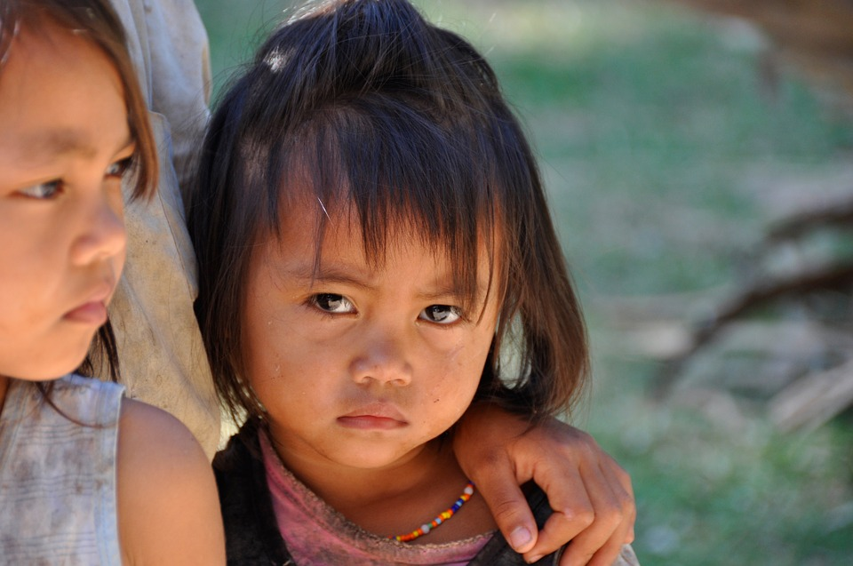
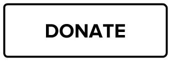

HELP THE POOR FOR A BETTER FUTURE.
Every day we bring hope to millions of children in the world's hardest places as a sign of God's unconditional love.
 Watch About!
Watch About!



HELP THE POOR FOR A BETTER FUTURE.
Every day we bring hope to millions of children in the world's hardest places as a sign of God's unconditional love.
Watch About!
“Happiness doesn’t result
from what we get,
but from what we give.”
– Ben Carson
“Volunteers don’t get paid,
not because they’re worthless,
but because they’re priceless.”
– Sherry Anderson
“The smallest act of kindness is worth
more than the grandest intention.”
-Oscar Wilde
About We Care Foundation
We care Foundation,
an NGO for poor child education, is an NGO in India
directly benefitting over 15,00,000 children and
their families every year, through more than 400 live
welfare projects on education, healthcare, livelihood
and women empowerment, in over 2000 remote
villages and slums across 25 states of India.
Education is both the means as well as the end to
a better life: the means because it empowers an
individual to earn his/her livelihood and the end
because it increases one's awareness on a range
of issues – from healthcare to appropriate social
behaviour to understanding one's rights – and in
the process help him/her evolve as a better citizen.
Doubtless, education is the most powerful catalyst
for social transformation. But child education cannot
be done in isolation. A child will go to school only
if the family, particularly the mother, is assured of
healthcare and empowered. Moreover, when an
elder sibling is relevantly skilled to be employable
and begins earning, the journey of empowerment
continues beyond the present generation.
In keeping with its philosophy of 'Real Work Real Change', We Care Foundation , an NGO in India to support the underserved, has taken its intervention into the interiors of India, reaching the unreached in the remotest of rural areas and urban slums with our services and making this helping foundation in India, the best NGO in India.

Find us on Social Media